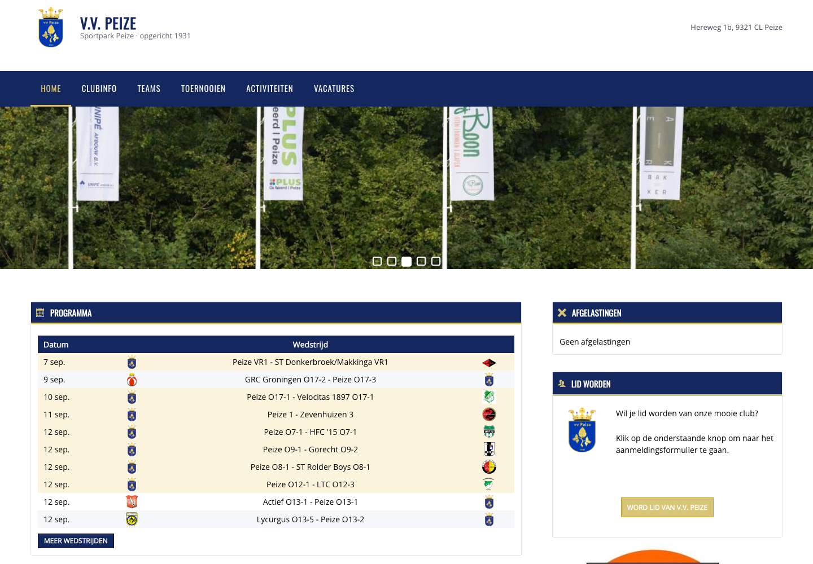
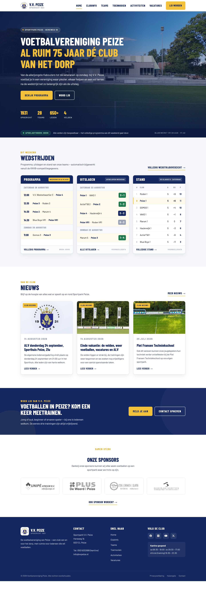
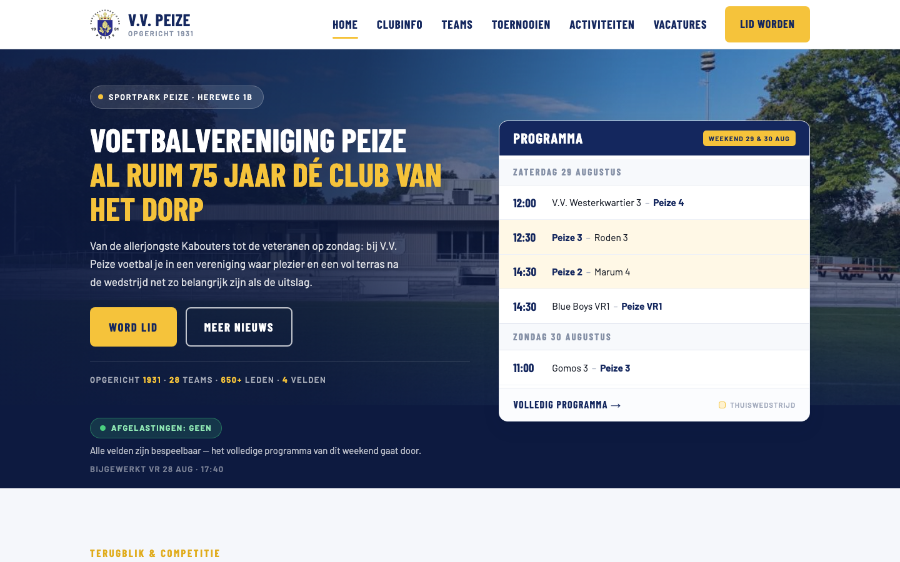
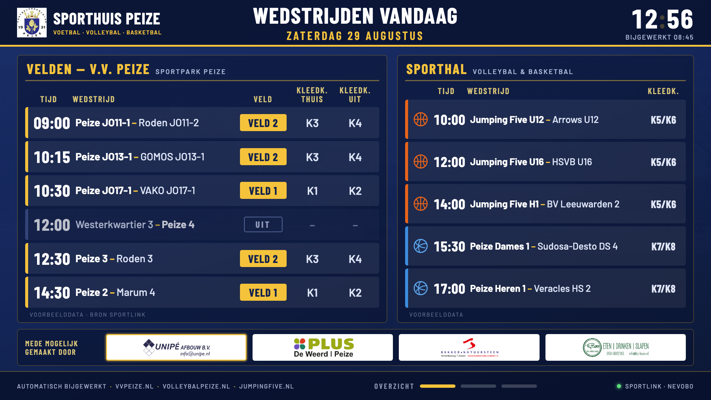

Route 1 · Sportlink Club.Website
Sportlink verzorgt alles: hosting, onderhoud, updates én de website zelf. De wedstrijddata (programma, uitslagen, standen, afgelastingen) stroomt automatisch in via widgets. De keerzijde: alle clubs draaien op hetzelfde vaste thema. Aanpasbaar zijn alleen de kleuren, het lettertype, foto's en de indeling van widgets — geen eigen vormgeving.
- Zorgeloos: geen technische vrijwilliger nodig
- Lid worden-formulier schrijft direct in de ledenadministratie
- Beperkte designvrijheid + advertenties (Club.Ads)
Route 2 · Alleen de data (Club.Dataservice)
Bij deze route neem je van Sportlink alleen de gegevens af: een datakoppeling (API) die programma, uitslagen, standen, teamindelingen en zelfs veld- en kleedkamerindeling live aanlevert. De website zelf bouw en host de club — bijvoorbeeld in WordPress — met volledige vrijheid in vormgeving. Dezelfde koppeling voedt ook een kantinescherm, zonder extra abonnement.
- Volledige designvrijheid; advertenties worden een keuze — Club.Ads zit bij de Dataservice in en kan (maar hoeft niet) op de eigen site geplaatst worden
- Lid worden blijft werken via het KNVB-formulier
- Vraagt een vrijwilliger die de site bouwt en onderhoudt
Kosten naast elkaar
| Kostenpost | Route 1 · Club.Website | Route 2 · Alleen de data |
|---|---|---|
| Eenmalig | — (al betaald bij de start) | €125 (Club.Dataservice) |
| Vast per jaar | €132 | €0 |
| Per lid per jaar | €1,35 | €1,10 |
| Hosting website | Inbegrepen | ±€60–150 per jaar — gewone webhosting ±€5–7/mnd (zelf updaten) of managed WordPress-hosting zoals TransIP Core ±€12,50/mnd (updates/backups inbegrepen) |
| Kantinescherm (tv) | Basis kan gratis: verborgen pagina met de programma-widget (alleen voetbal). Volwaardig scherm via Club.TV: €275 eenmalig + €1,21 per lid per jaar | Inbegrepen in de datakoppeling, incl. multi-club (volleybal & basketbal erbij) |
| Afspeelkastje per tv | ±€40–80 eenmalig (Raspberry Pi of tv-stick in kioskmodus) — geldt voor beide routes | |
| Onderhoud & support | Door Sportlink | Door een vrijwilliger van de club |
| Huidige situatie: Pakket.Ideaal (Website + TV + Mobiel + Ads, €2,80/lid) | ±€1.260 per jaar bij ±450 leden — waarvan Club.TV en Club.Mobiel op dit moment ongebruikt zijn | |
| Voorbeeld: website bij ±450 leden | ±€740 per jaar (afschalen naar alleen Club.Website) | ±€555–645 per jaar (+ €125 eenmalig) · met Club.Mobiel als losse module erbij: ±€1.050–1.140 per jaar (bundels zonder Club.TV bestaan voor voetbal niet) |
| Voorbeeld: website + kantinescherm bij ±450 leden | ±€740 per jaar met widget-pagina (alleen voetbal) · Club.TV zit al in het huidige pakket (speler vervangen nodig) | ±€555–645 per jaar — kantinescherm (multi-club) zit erbij in |
De vier voorstellen
Klik op een kaart om de mockup op ware grootte te bekijken.

Sportlink-variant
Deze variant is inmiddels grotendeels gerealiseerd op de echte site, binnen het huidige Club.Website-abonnement: header met logo, vlakke clubkleuren, kaarten met goudaccenten en een full-width fotoheader. Bekijk het resultaat op vvpeize.nl.
Bekijk de live site
Zelfbouw-variant
De zelfbouwversie met volledige designvrijheid: full-width hero, moderne kaarten en typografie. Te realiseren met een eigen WordPress-site plus de Sportlink Club.Dataservice-koppeling.
Bekijk variant
Programma boven de vouw
Zelfde zelfbouw-stijl, maar met het wedstrijdprogramma direct bij binnenkomst in beeld: een compactere hero met de programmakaart ernaast — voor wie op zaterdagochtend snel de aanvangstijd zoekt.
Bekijk variant
Kantinescherm
Full-screen tv-weergave voor het gedeelde Sporthuis: alle thuiswedstrijden van vandaag — voetbal (V.V. Peize), volleybal (Volleybal Peize) én basketbal (Jumping Five) — met veld- en kleedkamerindeling, gevolgd door roulerende club-slides. Data per bond: Sportlink en Nevobo. Opent op tv-formaat (1920×1080). Voor betrouwbaar dag-in-dag-uit draaien is een klein afspeelkastje achter de tv aan te raden (Raspberry Pi of tv-stick in kioskmodus, ±€40–80 eenmalig); de ingebouwde browser van een smart-tv start niet automatisch op en houdt het vaak geen hele speeldag vol.
Bekijk variant